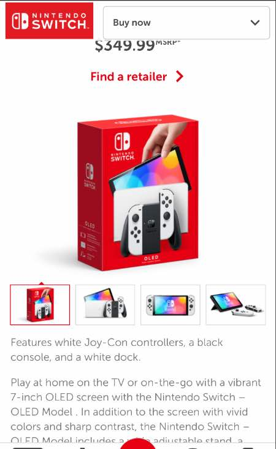
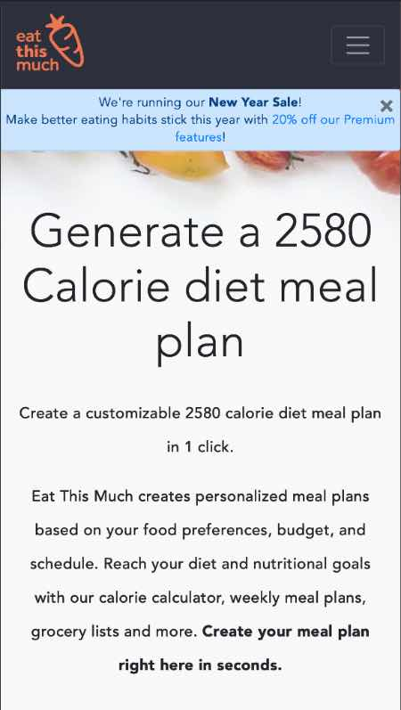

Whitespace
 Nintendo.comThis is a great example of whitespace use. Nintendo really uses whitespace to make the whole site have a relaxed feel. This makes me want to stay on the site longer since I don't feel claustrophobic while here. Notice expecially the white space in between the pictures you can select, around the image being displayed, and even between the paragraphs. The line height also reflects proper use of whitespace, making it easy to read.
Contrast
Familysearch.orgIn this example, family search.org uses contrast to great affectedness. Notice how the black contrasts highly against the call to action button. The get started button really pops with that bright blue against the black background, and that helps me to know that that is what they want me to click. It's especially important to have a high contrast with a call to action button, that way people really notice what it is that they need to do.
Alignment
 Eatthismuch.comThe realignment of the words on this page really pops! Or rather, it doesn't pop. That's because it helps your eyes flow down the page naturally, so you don't really notice that you have kept reading. The proper alignment in the center of the paragraphs on this page as well as the headings draw the eye downward, causing you to read more.